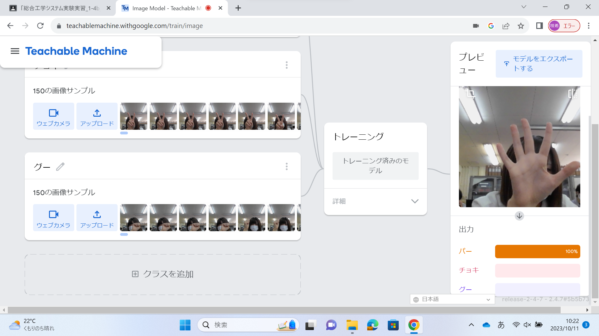
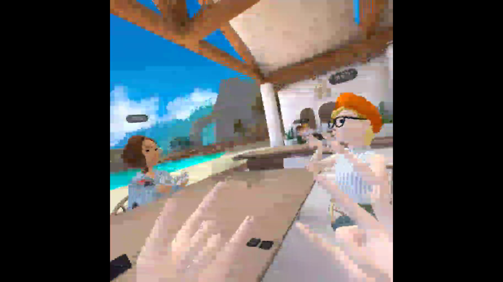

第2週目
2-1 １週目のレポートをHTMLで作る
１週目のレポート
1.内容
githubを利用して、HTMLでの一週目の実習レポートの作り方を学んだ。画像の名前を変えてアップロードし、正しく表示されていることを確認した。
2.感想
画像が名前を変えてアップロードしただけなのにあるべき場所に表示されていて驚いた。hrefと書いてあるところの後ろにURLを入れるとその文字がリンクになるのが面白かった。自分のホームページのURLの末尾にrep01と入れるとレポートのページが表示されるのが、仕組みは全く分からなかったがすごいと思った。
2-2 機械学習体験

1.内容
Teachable Machineを使って、グー、チョキ、パーを識別する機械学習モデルを作成し、カメラを使ってリアルタイムに判別する様子を観察した。
2.感想
あまり学習させた枚数も多くないはずなのに、かなり精度の高い判別をしてきたので、驚いた。また、グーの画像を撮る際に自分の顔が映りこんでいたため、何も出していなくても自分の顔が映りこんでいるとグーだと判定されてしまった。より精度を上げるためには、このような点には気を付けなければならないと感じた。学習させていないポーズ(サムズアップなど)をした際も、近いもので判別されていたのですごいと思った。
2-3 VR（バーチャルリアリティー：Virtual Reality）会議室の体験

1.内容
VRゴーグルなどの機器を利用して、メタバースの世界を体験した。クラスみんなで同じ会議室に入り、同じクラスの人達とVR世界で交流した。
2.感想
VRゴーグルにカメラが付いていることを知らなかったので、切り替えると現実世界が見えることに驚いた。また、カメラが付いているため、自分の手の動きや形もしっかり再現されていたのが面白かった。会議室では、現実では隣にいないはずの友達の声が、若干のタイムラグはあるが隣から聞こえてきて新鮮な気持ちになった。技術の力のすごさを改めて思い知らされたと感じた。